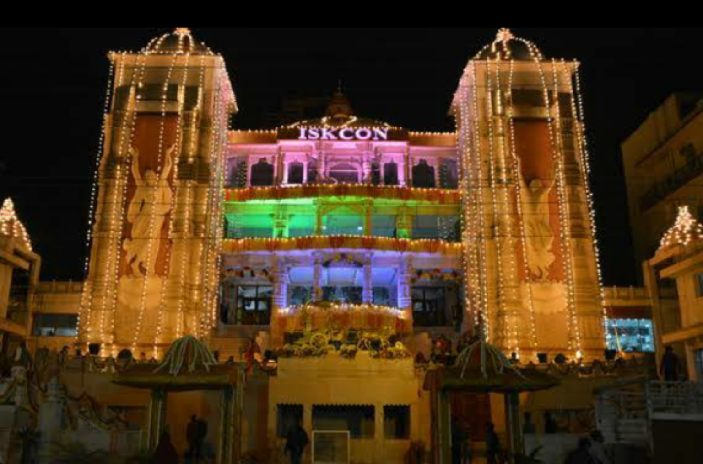

A-5, Maharaja Agrasen Marg, opposite NTPC office, Block A, Sector 33, Noida, Uttar Pradesh 201307
📞 8005578598
Festival parking information: Sector 25, Agresen Chowk, and the ground near Adobe.

Call 8005578598Navigate